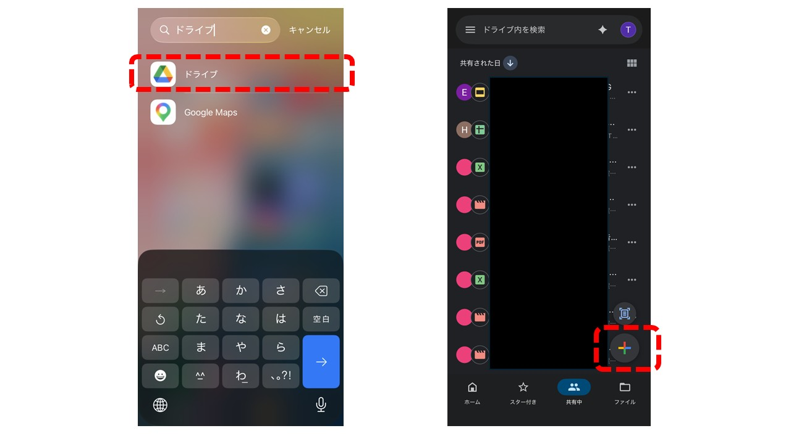
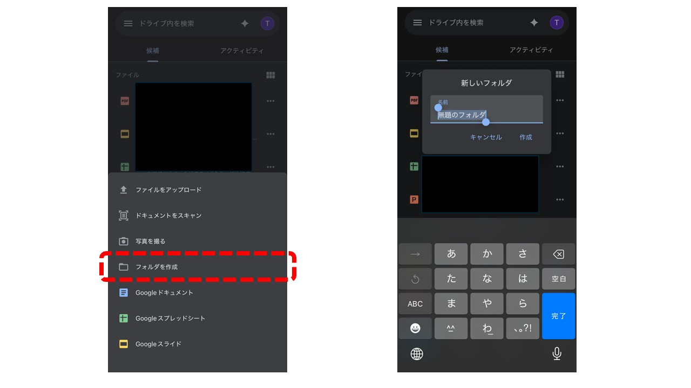
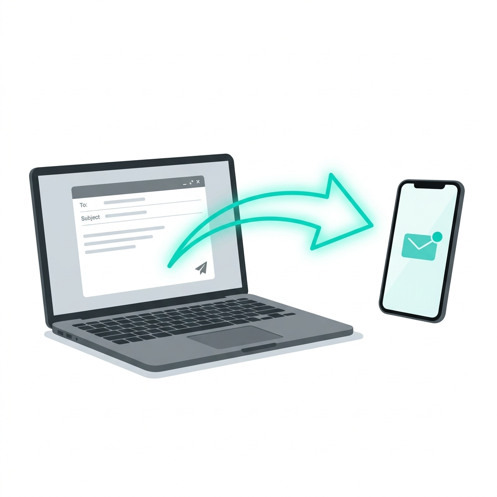
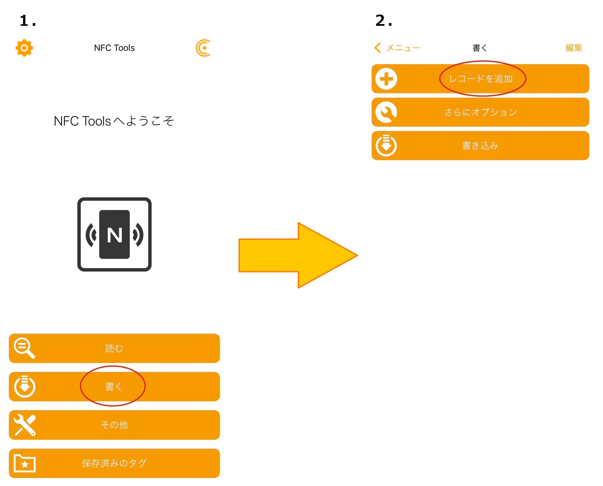
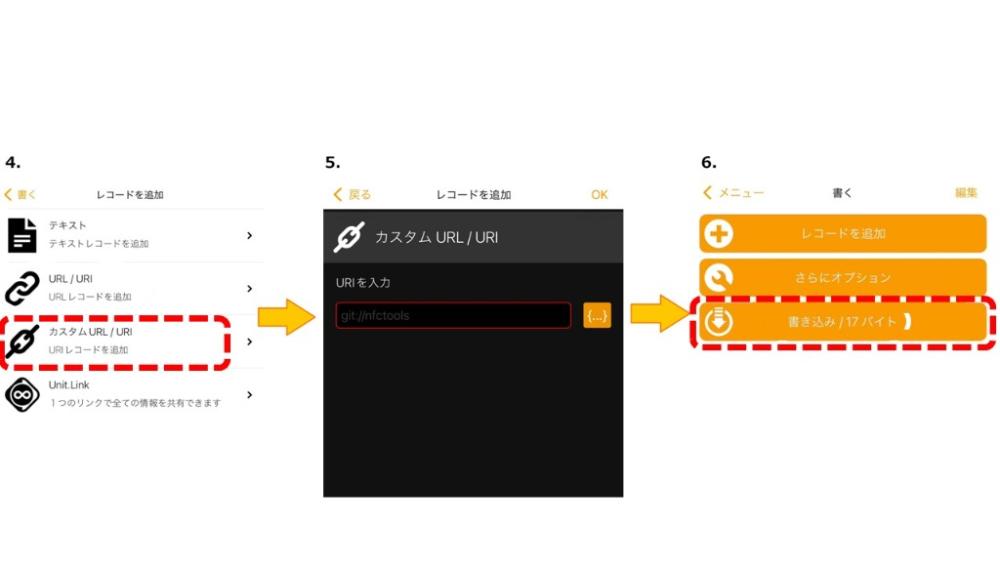
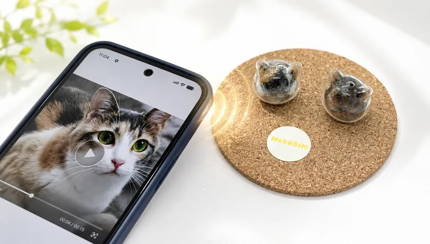

Step 1写真へのリンク（URL）を取得する
Googleドライブの場合
① スマホの「Googleドライブ」アプリを開き、新しくフォルダを作ります。


※フォルダ名に「愛するペットの名前」などを付けて作成します。
② 撮影した写真フォルダから写真を選んで、共有→「Googleドライブ」のフォルダに保存してください。
③ フォルダの「共有」メニューから「リンクをコピー」します。
Googleフォトの場合
① スマホの「Googleフォト」アプリを開き、見せたい写真を選択します。
② 撮影した写真フォルダから写真を選んで、共有→「Googleフォト」に保存してください。
③ 画面上の「共有」アイコンから「リンクを作成」を押してURLをコピーします。
④ コピーしたURLをスマホに送る

コピーしたURL（リンク）を、メールやLINEを使って自分のスマートフォン宛てに送信しておいてください。
Step 2スマホに専用アプリを入れる
スマホで無料アプリ「NFC Tools」をインストールします。
Androidスマホの方
Google Playで読み取る
Step 3ねこビンに書き込む（アプリの操作）
スマホで先ほど送ったURLを「コピー」してから、アプリ「NFC Tools」を開いてください。
①「書く」タブを選び、「レコードを追加」を押します。

②「カスタムURL / URI」を選び、コピーしたURLを貼り付けます。

入力枠を長押しして「ペースト（貼り付け）」し、右上のOKを押した後、「書き込み」ボタンを押します。
③「スキャンの準備ができました」の画面が表示されたら、NekoBINシールに近づけてください。

スマホの背面を、ねこビンの「NekoBINロゴシール」にピッと当てます。
大きなチェックマークが出たら大成功です！
Step 4
写真を入れて、いつでも楽しもう！
① フォルダーまたはフォトに写真を保存する。
Step1で準備したGoogleドライブの「専用フォルダー」またはGoogleフォトアプリをスマホで開き、ペットの大切な写真や動画を保存（追加）してください。後から何度でも写真を追加・削除できます。
※直接写真ではなくフォルダを指定することも可能です。
② ねこビンにかざして写真を見る
お疲れ様でした！これですべての準備は完了です。
📱 NekoBINロゴシールにかざすだけ！
ねこビンの「NekoBINロゴシール」にスマホをピッと当てるだけで、
いつでもあの子の写真が飛び込んできます。
※NFC機能を使う際は、スマホの画面ロックを解除してからかざしてください。
FAQよくあるご質問
Q. ご家族や友人がスマホをかざしても、写真が開けません。
A. Googleドライブ／Googleフォトの「アクセス権限」を変更してください。
初期設定では、アクセス権限が「制限付き（自分のみ）」になっているため、他の人がリンクを開けません。以下の手順で「リンクを知っている全員」に変更してください。
【Googleドライブの場合】
- Googleドライブアプリで共有フォルダを長押し（またはフォルダ右の「…」アイコンをタップ）→「共有」を開く
- 「アクセスを管理」の画面で、「制限付き」と表示されている部分をタップ
- 「リンクを知っている全員」に変更して「完了」を押す
- もう一度「リンクをコピー」してNekoBINに書き込み直す
【Googleフォトの場合】
- Googleフォトで写真を開き、「共有」アイコンをタップ
- 「リンクを作成」を選ぶ（Googleフォトのリンクは自動的に全員が閲覧可能です）
- 作成されたリンクをコピーして、NekoBINへ書き込み直す
※権限を変更したあとは、必ずStep3の手順でNekoBINに新しいURLを書き込み直してください。
Q. スマホをかざしても反応しません。
A. スマホのNFCアンテナの位置を確認してください。
スマホによってNFCが反応する位置（アンテナの位置）は異なります。シールにぴったり当てても反応しない場合は、位置を少しずつずらしてみてください。
- iPhoneの場合：端末の上部先端をシールに当ててください。
- Androidの場合：背面の中央付近（カメラ横など機種によって異なります）をシールに当ててください。
※反応しない場合は、スマホの画面ロックを解除してから、位置を変えながら何度か試してみてください。